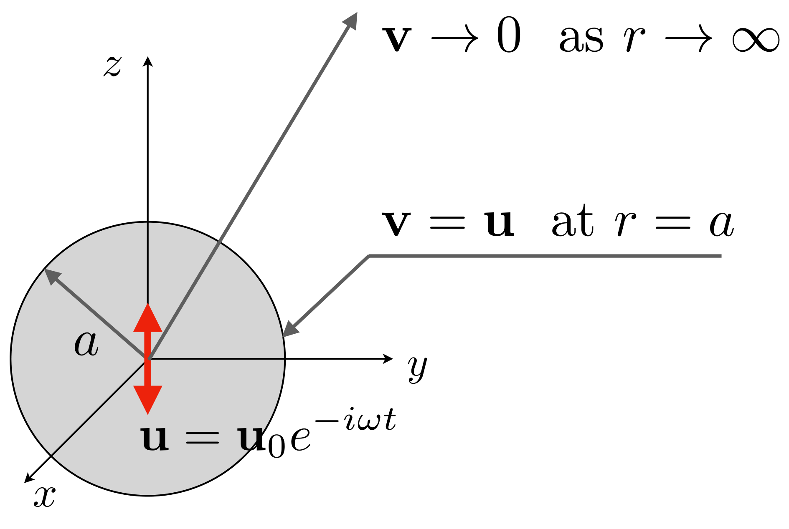

9.5. Basset (history) force on a solid sphere in Stokes flow
Summary
Subject: History force acting on sphere
Main conclusion: Memory effect induces additional drag \(6 \pi \rho a^{2} \sqrt{\frac{\nu}{\pi}} \int_{-\infty}^{t} \frac{du}{dt}\frac{d\tau}{\sqrt{t - \tau}}\) .
Key idea A particle feels a memory effect; how it moved in the past.
Reference: Landau-Lifshitz, Fluid Mechanics, Pergamon [LL87 ] (Chap. 2).

Fig. 9.6 Oscillating sphere
Consider a solid sphere oscillating at angular frequency \(\omega\) (note that this is of course not the vorticity though the symbol for the angular frequency used here is the same as that for the vorticity). The amplitude of the oscillation is denoted by
(9.155) \[ \mathbf{u} = \mathbf{u}_{0} e^{-i \omega t}\]
where \(\mathbf{u}_{0}\) is constant.
Note that the physical velocity is the real part of \(\mathbf{u}_{0} e^{-i \omega t}\) . Therefore, strictly speaking, we should write \(\mathbf{u} = \text{Re} [\mathbf{u}_{0} e^{-i \omega t}]\) . However, in the following calculations, no confusion would be caused even writing \(\mathbf{u} = \mathbf{u}_{0} e^{-i \omega t}\) .
The Navier-Stokes equation for incompressible fluids is given by
(9.156) \[ \rho \frac{\partial \mathbf{v}}{\partial t} + \rho \mathbf{v} \cdot \nabla \mathbf{v} = - \nabla p + \mu \nabla^{2} \mathbf{v}\]
The Reynolds number is assumed to be small so as to neglect the advection term.
(9.157) \[ \rho \frac{\partial \mathbf{v}}{\partial t} = - \nabla p + \mu \nabla^{2} \mathbf{v}\]
Taking \(rot\) of this equation yields
This is the vorticity equation \(\frac{\partial \boldsymbol{\omega}}{\partial t} = \nu \nabla^{2} \boldsymbol{\omega}\) , where \(\boldsymbol{\omega}~(= \nabla \times \mathbf{v})\) is the vorticity. This equation shows that each component of the vorticity is diffused by the fluid viscosity and the behavior is analogous to heat conduction.
(9.158) \[ \rho \frac{\partial \nabla \times \mathbf{v}}{\partial t} = \mu \nabla^{2} \nabla \times \mathbf{v}\]
since \(\nabla \times \nabla p = 0\) . The origin of the coordinate system is located at the center of the sphere at an instant. Being similar to the solution for the Stokes drag, we assume that the velocity field is given by the vector potential:
(9.159) \[ \mathbf{v} = \nabla \times \mathbf{A}\]
where
(9.160) \[ \mathbf{A}
= g(r) \mathbf{e}_{r} \times \mathbf{u}
= \frac{df}{dr} \mathbf{e}_{r} \times \mathbf{u}
= \nabla f \times \mathbf{u}\]
Note that in the present problem we consider the sphere moving at \(\mathbf{u}\) and the far field is motionless. Substituting the expression of \(\mathbf{A}\) into the \(\mathbf{v}\) equation yields
(9.161) \[\begin{split}\begin{split}
\mathbf{v}
&= \nabla \times ( \nabla f \times \mathbf{u} )
\rightarrow \epsilon_{ijk} \left( \frac{\partial }{\partial x_{j}} \epsilon_{kmn} \frac{\partial f}{\partial x_{m}} u_{n} \right) \\
&= e^{-i \omega t} \epsilon_{ijk} \frac{\partial }{\partial x_{j}} \left( \epsilon_{kmn} \frac{\partial f u_{n}^{0}}{\partial x_{m}} \right)
\rightarrow e^{-i \omega t} \nabla \times \nabla \times ( f \mathbf{u}_{0} )
\end{split}\end{split}\]
where the subscript \(0\) for \(\mathbf{u}_{0}\) was put as the superscript in the component form. By substituting this into Eq. (9.158) we obtain
(9.162) \[ - i \omega e^{-i \omega t} \nabla \times \nabla \times \nabla \times ( f \mathbf{u}_{0} ) = \nu e^{-i \omega t} \nabla^{2} \nabla \times \nabla \times \nabla \times ( f \mathbf{u}_{0} )\]
where \(\nu = \mu / \rho\) . By making use of the identity
(9.163) \[ \nabla \times \nabla \times (\text{any vector}) = \nabla (\nabla \cdot (\text{any vector})) - \nabla^{2} (\text{any vector})\]
we write
(9.164) \[\begin{split}\begin{split}
- i &\omega e^{-i \omega t} \left\{ \nabla \nabla \cdot \nabla \times f \mathbf{u}_{0} - \nabla^{2} \nabla \times f \mathbf{u}_{0} \right\} \\
&= \nu e^{-i \omega t} \nabla^{2} \left\{ \nabla \nabla \cdot \nabla \times f \mathbf{u}_{0} - \nabla^{2} \nabla \times f \mathbf{u}_{0} \right\}
\end{split}\end{split}\]
However, because of the identity
(9.165) \[ \nabla \cdot \nabla \times \text{(any vector)} = 0\]
the first terms in both sides vanish. Therefore,
(9.166) \[ \left\{ \frac{ i \omega }{ \nu } \nabla^{2} \nabla \times f \mathbf{u}_{0} + \nabla^{2} \nabla^{2} \nabla \times f \mathbf{u}_{0} \right\} e^{-i \omega t} = 0\]
Since \(\mathbf{u}_{0}\) is constant, \(\nabla \times ( f \mathbf{u}_{0} ) = \nabla f \times \mathbf{u}_{0}\) . Hence,
(9.167) \[ \left\{ \left( \frac{ i \omega }{ \nu } \nabla^{2} \nabla f + \nabla^{2} \nabla^{2} \nabla f \right) \times \mathbf{u}_{0} \right\} e^{-i \omega t} = 0\]
We obtain
(9.168) \[ \nabla^{2} \nabla^{2} \nabla f + \frac{ i \omega }{ \nu } \nabla^{2} \nabla f = 0
\rightarrow
\nabla \left\{ \nabla^{2} \nabla^{2} f + \frac{ i \omega }{ \nu } \nabla^{2} f \right\} = 0\]
Integrating this equation yields
(9.169) \[ \nabla^{2} \nabla^{2} f + \frac{ i \omega }{ \nu } \nabla^{2} f = \text{const.}\]
The velocity given by the second-order derivative of \(f\) . Since \(\mathbf{v}\) and its derivatives must go to zero as \(r \rightarrow \infty\) , the constant on the R.H.S. should be set to zero:
(9.170) \[ \nabla^{2} \nabla^{2} f + \frac{ i \omega }{ \nu } \nabla^{2} f = 0
\rightarrow \nabla^{2} \nabla^{2} f + k^{2} \nabla^{2} f = 0\]
where we set
(9.171) \[ k^{2} = \frac{i \omega}{\nu}\]
Let us assume the functional form \(h(r) e^{ikr}\) for \(\nabla^{2} f\) . By substituting this functional form into the ODE, we obtain
(9.172) \[ \frac{d^{2} h}{d r^{2}} + \left( 2 i k + \frac{2}{r} \right) \frac{d h}{d r} + \frac{2 i k}{r} h = 0\]
We find \(h(r) = r^{-1}\) , which satisfies the requirement that \(\nabla^{2} f \rightarrow 0\) as \(r \rightarrow \infty\) . Therefore, we can set \(\nabla^{2} f = c_{0} e^{ikr} / r\) , where \(c_{0}\) is constant. Integrating this gives
(9.173) \[ \frac{df}{dr} = \frac{1}{r^{2}} \left\{ \alpha e^{ikr} \left( r - \frac{1}{ik} + \beta \right) \right\}\]
where \(c_{0}\) was replaced with \(c_{0} = \alpha / ik\) , for which
(9.174) \[ \nabla^{2} f = \frac{\alpha ik}{r} e^{ikr}\]
We do not need to obtain \(f\) itself since it will not be required in the following calculations. The velocity is obtained by substituting this result into Eq. (9.161) .
(9.175) \[\begin{split}\begin{split}
\mathbf{v}
&= \nabla \times \nabla \times f \mathbf{u}
= e^{-i \omega t} \left\{ \nabla \nabla \cdot f \mathbf{u}_{0} - \nabla^{2} f \mathbf{u}_{0} \right\}
\rightarrow e^{-i \omega t} \left\{ \frac{\partial }{\partial x_{i}} \frac{\partial f u_{j}^{0}}{\partial x_{j}} - \frac{\partial f u_{i}^{0}}{\partial x_{j} \partial x_{j}} \right\} \\
&\rightarrow e^{-i \omega t} \left\{ u_{j}^{0} \frac{\partial }{\partial x_{i}} \frac{\partial f}{\partial x_{j}} - u_{i}^{0} \frac{\partial f}{\partial x_{j} \partial x_{j}} \right\}
\end{split}\end{split}\]
The first term in the right-most equation can be rewritten as
(9.176) \[ u_{j}^{0} \frac{\partial }{\partial x_{i}} \frac{\partial f}{\partial x_{j}}
= u_{j}^{0} \left\{ \frac{x_{j} x_{i}}{r^{2}} \frac{d^{2}f}{dr^{2}} + \left( \frac{\delta_{ij}}{r} - \frac{x_{j} x_{i}}{r^{3}} \right) \frac{df}{dr} \right\}\]
where the chain rule \(\nabla f = ( df/dr ) \nabla r\) and \(\nabla r \rightarrow x_{i}/r\) were used. The second order derivative of \(f\) is
(9.177) \[ \frac{d^{2} f}{d r^{2}}
= e^{ikr} \alpha \left\{ - \frac{2}{r^{2}} + \frac{i k}{r} + \frac{2}{i k r^{3}} \right\} - \frac{2 \beta}{r^{3}}\]
By substituting Eqs. (9.173) and (9.177) into Eq. (9.176) and using the solution Eq. (9.174) for the second term of Eq. (9.175) we obtain
(9.178) \[ v_{i}
=
e^{-i \omega t} \left\{ \left[ - \alpha \left( \frac{i k}{r} - \frac{1}{r^{2}} + \frac{1}{i k r^{3}} \right) e^{ikr} + \frac{\beta}{r^{3}} \right] u_{i}^{0} + \left[ \alpha \left( \frac{i k}{r} - \frac{3}{r^{3}} + \frac{3}{i k r^{3}} \right) e^{ikr} - \frac{3 \beta}{r^{3}} \right] \frac{u_{j}^{0} x_{j} x_{i}}{r^{2}} \right\}\]
In vectorial form,
The slip-condition
(9.180) \[ \mathbf{v} = \mathbf{u}~~~~\text{at}~~r = a\]
holds at the solid surface. Therefore, from Eq. (9.179) ,
(9.181) \[ \left\{ - \alpha \left( \frac{i k}{a} - \frac{1}{a^{2}} + \frac{1}{i k a^{3}} \right) e^{ika} + \frac{\beta}{a^{3}} \right\} \mathbf{u}_{0} + \left\{ \alpha \left( \frac{i k}{a} - \frac{3}{a^{2}} + \frac{3}{i k a^{3}} \right) e^{ika} - \frac{3 \beta}{a^{3}} \right\} ( \mathbf{u}_{0} \cdot \mathbf{e}_{r} ) \mathbf{e}_{r} = \mathbf{u}_{0}~~~~ \text{at}~~r = a\]
The coefficients of the first and second terms should be unity and zero, respectively, so that,
(9.182) \[\begin{split}\begin{split}
- \alpha \left( \frac{i k}{a} - \frac{1}{a^{2}} + \frac{1}{i k a^{3}} \right) e^{ika} + \frac{\beta}{a^{3}} = 1 \\
\alpha \left( \frac{i k}{a} - \frac{3}{a^{2}} + \frac{3}{i k a^{3}} \right) e^{ika} - \frac{3 \beta}{a^{3}} = 0
\end{split}\end{split}\]
Eliminating \(\beta\) yields
(9.183) \[ \alpha = - \frac{3 a}{2 i k} e^{-ika}\]
Then,
(9.184) \[ \beta = - \frac{a^{3}}{2} \left( 1 - \frac{3}{k^{2} a^{2}} - \frac{3}{i k a}\right)\]
Let us set \(\mathbf{u}_{0} = u_{0} \mathbf{e}_{z}~(u_{0} >0)\) . The velocity components are therefore
(9.185) \[\begin{split}\begin{split}
&v_{r}
= \mathbf{v} \cdot \mathbf{e}_{r}
= 2 u_{0} \cos \theta e^{-i \omega t} \left\{ \alpha e^{ikr} \left( - \frac{1}{r^{2}} + \frac{1}{i k r^{3}} \right) - \frac{\beta}{r^{3}} \right\} \\
&v_{\theta}
= \mathbf{v} \cdot \mathbf{e}_{\theta}
= - u_{0} \sin \theta e^{-i \omega t} \left\{ \alpha e^{ikr} \left( - \frac{i k}{r} + \frac{1}{r^{2}} - \frac{1}{i k r^{3}} \right) + \frac{\beta}{r^{3}} \right\}
\end{split}\end{split}\]
Differentiating the velocity components yields derivatives required to calculate the viscous stress:
(9.186) \[\begin{split}\begin{split}
&\frac{\partial v_{r}}{\partial r}
= u_{0} \cos \theta e^{-i \omega t} \left\{ \alpha e^{ikr}\left( \frac{6}{r^{3}} - \frac{2 i k}{r^{2}} - \frac{6}{i k r^{4}} \right) + \frac{6 \beta}{r^{4}} \right\} \\
&\frac{\partial v_{r}}{\partial \theta}
= - 2 u_{0} \sin \theta e^{-i \omega t} \left\{ \alpha e^{ikr} \left( - \frac{1}{r^{2}} + \frac{1}{ikr^{3}} \right) - \frac{\beta}{r^{3}} \right\} \\
&\frac{\partial v_{\theta}}{\partial r}
= - u_{0} \sin \theta e^{-i \omega t} \left\{ \alpha e^{ikr}\left( \frac{2 i k}{r^{2}} - \frac{3}{r^{3}} - \frac{(ik)^{2}}{r} + \frac{3}{i k r^{4}} \right) - \frac{3 \beta}{r^{4}}\right\}
\end{split}\end{split}\]
Their values at \(r = a\) are
(9.187) \[\begin{split}\begin{split}
&\left. v_{r} \right|_{r=a}
= 2 u_{0} \cos \theta e^{-i \omega t} \left\{ \alpha e^{ikr} \left( - \frac{1}{a^{2}} + \frac{1}{i k a^{3}} \right) - \frac{\beta}{r^{3}} \right\} \\
&\left. v_{\theta} \right|_{r=a}
= - u_{0} \sin \theta e^{-i \omega t} \left\{ \alpha e^{ikr} \left( - \frac{i k}{a} + \frac{1}{a^{2}} - \frac{1}{i k a^{3}} \right) + \frac{\beta}{a^{3}} \right\}
\end{split}\end{split}\]
(9.188) \[\begin{split}\begin{split}
&\left. \frac{\partial v_{r}}{\partial r} \right|_{r=a}
= u_{0} \cos \theta e^{-i \omega t} \left\{ \alpha e^{ika}\left( \frac{6}{a^{3}} - \frac{2 i k}{a^{2}} - \frac{6}{i k a^{4}} \right) + \frac{6 \beta}{a^{4}} \right\} \\
&\left. \frac{\partial v_{r}}{\partial \theta} \right|_{r=a}
= - 2 u_{0} \sin \theta e^{-i \omega t} \left\{ \alpha e^{ika} \left( - \frac{1}{a^{2}} + \frac{1}{ika^{3}} \right) - \frac{\beta}{a^{3}} \right\} \\
&\left. \frac{\partial v_{\theta}}{\partial r} \right|_{r=a}
= - u_{0} \sin \theta e^{-i \omega t} \left\{ \alpha e^{ika}\left( \frac{2 i k}{a^{2}} - \frac{3}{a^{3}} - \frac{(ik)^{2}}{a} + \frac{3}{i k a^{4}} \right) - \frac{3 \beta}{a^{4}}\right\}
\end{split}\end{split}\]
The \(rr\) and \(r \theta\) components of the viscous stress tensor \(\boldsymbol{\tau}\) are
(9.189) \[ \tau_{rr}
= 2 \mu \frac{\partial v_{r}}{\partial r}
= 2 \mu u_{0} \cos \theta e^{-i \omega t} \left\{ \alpha e^{ikr}\left( \frac{6}{r^{3}} - \frac{2 i k}{r^{2}} - \frac{6}{i k r^{4}} \right) + \frac{6 \beta}{r^{4}} \right\} \]
(9.190) \[ \tau_{\theta r}
= \mu \left( \frac{1}{r} \frac{\partial v_{r}}{\partial \theta} + \frac{\partial v_{\theta}}{\partial r} - \frac{v_{\theta}}{r} \right)
= - \mu u_{0} \sin \theta e^{-i \omega t} \left\{ \alpha e^{ikr} \left( - \frac{6}{r^{3}} + \frac{3 i k}{r^{2}} - \frac{(i k)^{2}}{r} + \frac{6}{i k r^{4}} \right) - \frac{6 \beta}{r^{4}} \right\}\]
At the solid surface,
(9.191) \[\begin{split}\begin{split}
&\left. \tau_{rr} \right|_{r=a}
= 2 \mu u_{0} \cos \theta e^{-i \omega t} \left\{ \alpha e^{ika}\left( \frac{6}{a^{3}} - \frac{2 i k}{a^{2}} - \frac{6}{i k a^{4}} \right) + \frac{6 \beta}{a^{4}} \right\} \\
&\left. \tau_{\theta r} \right|_{r=a}
= - \mu u_{0} \sin \theta e^{-i \omega t} \left\{ \alpha e^{ika}\left( - \frac{6}{a^{3}} + \frac{3 i k}{a^{2}} - \frac{(i k)^{2}}{a} + \frac{6}{i k a^{4}} \right) - \frac{6 \beta}{a^{4}} \right\}
\end{split}\end{split}\]
We also need the pressure distribution at \(r = a\) to calculate the drag. Recall Eq. (9.157)
(9.192) \[ \nabla p = \mu \nabla^{2} \mathbf{v} - \rho \frac{\partial \mathbf{v}}{\partial t}\]
The velocity is given as \(\mathbf{v} = e^{-i \omega t} ( \cdots )\) , so that
(9.193) \[ \frac{\partial \mathbf{v}}{\partial t}
= - i \omega \mathbf{v}\]
The pressure equation is therefore
(9.194) \[ \nabla p
= \mu \nabla^{2} \mathbf{v} + \rho i \omega \mathbf{v}
= \mu \nabla^{2} \mathbf{v} + \mu k^{2} \mathbf{v}
= \mu \left( \nabla^{2} + k^{2} \right) \mathbf{v}\]
Substituting \(\mathbf{v} = \nabla \times \nabla \times ( f \mathbf{u} )\) (Eq. (9.161) ) into the above equation gives
(9.195) \[ \nabla p
= \mu \left( \nabla^{2} + k^{2} \right) ( \nabla \times \nabla \times ( f \mathbf{u} ) )
= \mu \left( \nabla^{2} + k^{2} \right) ( \nabla \nabla \cdot ( f \mathbf{u} ) - \nabla^{2} ( f \mathbf{u} ) )\]
Applying the operator \(\nabla^{2} + k^{2}\) to the second term yields zero due to Eq. (9.170) :
(9.196) \[ \left( \nabla^{2} + k^{2} \right) \nabla^{2} ( f \mathbf{u} )
= \nabla^{2} \nabla^{2} ( f \mathbf{u} ) + k^{2} \nabla^{2} ( f \mathbf{u} )
= \mathbf{u} ( \nabla^{2} \nabla^{2} f + k^{2} \nabla^{2} f ) = 0\]
Therefore,
(9.197) \[ \nabla p
= \mu \left( \nabla^{2} + k^{2} \right) \nabla \nabla \cdot ( f \mathbf{u} ) \]
After some manipulation we have
(9.198) \[ \nabla p
= \nabla \left\{ \mu \left( \mathbf{u} \cdot \nabla \nabla^{2} f + k^{2} \mathbf{u} \cdot \nabla f \right) \right\}\]
By integrating this we obtain
(9.199) \[ p
= \mu \left( \mathbf{u} \cdot \nabla \nabla^{2} f + k^{2} \mathbf{u} \cdot \nabla f \right) + p_{0}\]
where \(p_{0}\) is far field pressure. Using \(\nabla f = ( df/dr ) \nabla r\) and \(\nabla r \rightarrow x_{i}/r\) again we may write
(9.200) \[ p
\rightarrow \mu \left\{ \frac{u_{j} x_{j}}{r} \frac{d}{dr} \nabla^{2} f + k^{2} \frac{u_{j} x_{j}}{r} \frac{df}{dr} \right\} + p_{0}\]
With Eqs. (9.174) and (9.173) , the R.H.S. becomes
(9.201) \[ p
= \mu \frac{\beta k^{2}}{r^{3}} u_{j} x_{j} + p_{0}\]
In vectorial form,
(9.202) \[ p = \mu \frac{\beta k^{2}}{r^{2}} ( \mathbf{u} \cdot \mathbf{e}_{r} ) + p_{0}\]
For \(\mathbf{u}_{0} = u_{0} \mathbf{e}_{z}\) ,
(9.203) \[ p = \mu u_{0} \cos \theta e^{-i \omega t} \frac{\beta k^{2}}{r^{2}} + p_{0}\]
and at the solid surface
(9.204) \[ \left. p \right|_{r=a} = \mu u_{0} \cos \theta e^{-i \omega t} \frac{\beta k^{2}}{a^{2}} + p_{0}\]
The hydrodynamic force acting on the sphere is given by
(9.205) \[ \mathbf{F}
= \iint_{S} (-p \mathbf{I} + \boldsymbol{\tau}) \cdot \mathbf{n} dS\]
where \(\mathbf{n} = \mathbf{e}_{r}\) . Since we set \(\mathbf{u}_{0} = u_{0} \mathbf{e}_{z}~(u_{0} > 0)\) The drag \(F_{D}\) is the component of \(\mathbf{F}\) in the \(-z\) direction; hence
(9.206) \[\begin{split}\begin{split}
F_{D}
&= -\mathbf{e}_{z} \cdot \mathbf{F}
= \iint_{S} (p \mathbf{e}_{z} \cdot \mathbf{I} \cdot \mathbf{e}_{r} -\mathbf{e}_{z} \cdot \boldsymbol{\tau} \cdot \mathbf{e}_{r}) dS
= \iint_{S} (p \mathbf{e}_{z} \cdot \mathbf{e}_{r} - \mathbf{e}_{z} \cdot \boldsymbol{\tau} \cdot \mathbf{e}_{r}) dS \\
&= \iint_{S} (p \cos \theta - \tau_{rr} \cos \theta + \tau_{\theta r} \sin \theta) dS \\
&= 2 \pi a^{2} \int_{0}^{\pi} (p \cos \theta - \tau_{rr} \cos \theta + \tau_{\theta r} \sin \theta) \sin \theta d \theta \\
\end{split}\end{split}\]
The pressure contribution is
(9.207) \[ \int_{0}^{\pi} p \cos \theta \sin \theta d \theta
= \mu u_{0} e^{-i \omega t} \frac{\beta k^{2}}{a^{2}} \int_{0}^{\pi} \cos^{2} \theta \sin \theta d \theta
= \mu u_{0} e^{-i \omega t} \frac{2 \beta k^{2}}{3 a^{2}}\]
The contribution by the normal viscous stress is
(9.208) \[\begin{split}\begin{split}
\int_{0}^{\pi} - \tau_{rr} \cos \theta \sin \theta d \theta
&= - 2 \mu u_{0} e^{-i \omega t} \left\{ \alpha e^{ika}\left( \frac{6}{a^{3}} - \frac{2 i k}{a^{2}} - \frac{6}{i k a^{4}} \right) + \frac{6 \beta}{a^{4}} \right\}\int_{0}^{\pi} \cos^{2} \theta \sin \theta d \theta \\
&= - \frac{4}{3} \mu u_{0} e^{-i \omega t} \left\{ \alpha e^{ika}\left( \frac{6}{a^{3}} - \frac{2 i k}{a^{2}} - \frac{6}{i k a^{4}} \right) + \frac{6 \beta}{a^{4}} \right\}
\end{split}\end{split}\]
Then, the tangential component of the viscous stress gives
(9.209) \[\begin{split}\begin{split}
\int_{0}^{\pi} \tau_{\theta r} \sin^{2} \theta d \theta
&= - \mu u_{0} e^{-i \omega t} \left\{ \alpha e^{ika}\left( - \frac{6}{a^{3}} + \frac{3 i k}{a^{2}} - \frac{(i k)^{2}}{a} + \frac{6}{i k a^{4}} \right) - \frac{6 \beta}{a^{4}} \right\} \int_{0}^{\pi} \sin^{3} \theta d \theta \\
&= - \frac{4}{3} \mu u_{0} e^{-i \omega t} \left\{ \alpha e^{ika}\left( - \frac{6}{a^{3}} + \frac{3 i k}{a^{2}} - \frac{(i k)^{2}}{a} + \frac{6}{i k a^{4}} \right) - \frac{6 \beta}{a^{4}} \right\}
\end{split}\end{split}\]
Collecting all the contributions yields
(9.210) \[ F_{D}
= \frac{4}{3} \pi a^{2} \mu u_{0} e^{-i \omega t} \left\{ \beta \frac{k^{2}}{a^{2}} - 2 \alpha e^{ika} \left( \frac{ik}{a^{2}} - \frac{(ik)^{2}}{a} \right) \right\}\]
By substituting Eq. (9.183) the \(\alpha\) term can be rewritten as
(9.211) \[ - 2 \alpha e^{ika} \left( \frac{ik}{a^{2}} - \frac{(ik)^{2}}{a} \right)
= - 2 \left( - \frac{3 a}{2 i k} e^{-ika} \right) e^{ika} \left( \frac{ik}{a^{2}} - \frac{(ik)^{2}}{a} \right)
= \frac{3}{a} - 3 i k\]
The \(\beta\) term is then
(9.212) \[ \beta \frac{k^{2}}{a^{2}}
= - \frac{a^{3}}{2} \left( 1 - \frac{3}{k^{2} a^{2}} - \frac{3}{i k a}\right) \frac{k^{2}}{a^{2}}
= - \frac{k^{2} a}{2} + \frac{3}{2 a} + \frac{3k}{2i}\]
The drag force is thus
(9.213) \[ F_{D} = \frac{4 \pi}{3} a^{2} \mu u_{0} e^{-i \omega t} \left\{ \frac{9}{2a} - \frac{9 ik}{2} - \frac{k^{2} a}{2} \right\}\]
By using \(k^{2} = i \omega / \nu\) , the second term can be rewritten as
\(\sqrt{i} = \frac{1}{\sqrt{2}} + \frac{i}{\sqrt{2}}\)
(9.214) \[\begin{split}\begin{split}
- \frac{9 ik}{2}
&= - \frac{9 i}{2} \sqrt{\frac{i \omega}{\nu}}
= - \frac{9 i}{2} \sqrt{\frac{\omega}{\nu}} \left( \frac{1}{\sqrt{2}} + \frac{i}{\sqrt{2}} \right)
= \frac{9}{2} \sqrt{\frac{\omega}{2 \nu}} - i \frac{9}{2} \sqrt{\frac{\omega}{2 \nu}} \\
&= \frac{9}{2} \sqrt{\frac{\omega}{2 \nu}} - i \omega\frac{9}{4} \sqrt{\frac{2}{\nu \omega}}
\end{split}\end{split}\]
The third term is
(9.215) \[ - \frac{k^{2} a}{2}
= - i \omega \frac{a}{2 \nu}\]
Putting these terms back into the drag equation yields
The velocity \(u~(= \mathbf{u} \cdot \mathbf{e}_{z})\) of the solid sphere is given by
(9.217) \[ u = u_{0} e^{-i \omega t}\]
and its temporal derivative is
(9.218) \[ \frac{du}{dt} = -i \omega u_{0} e^{-i \omega t}\]
Rewriting some terms using these relations yields
When \(\omega = 0\) , \(du/dt = 0\) and this force reduces to the Stokes drag, \(F_{D} = 6 \pi \mu u a\) . The factor in the first term
(9.220) \[ \delta = \sqrt{ \frac{2 \nu}{\omega} }\]
has the dimension of length. Within this length scale, the amplitude of the oscillation in the fluid exponentially decay.
(9.221) \[ F_{D}
= 6 \pi \mu a \left( 1 + \frac{a}{\delta} \right) u + 3 \pi a^{2} \sqrt{\frac{2 \mu \rho}{\omega}} \left( 1 + \frac{2a}{9 \delta} \right) \frac{du}{dt}\]
When \(\delta \ll a\) , we have
(9.222) \[ F_{D}
\rightarrow 6 \pi \mu \frac{a^{2}}{\delta} u + \frac{2 \pi a^{3}}{3 \delta} \sqrt{\frac{2 \mu \rho}{\omega}} \frac{du}{dt}
= 3 \pi a^{2} \sqrt{2 \mu \rho \omega} u + \frac{1}{2} \left( \rho \frac{4 \pi a^{3}}{3} \frac{du}{dt} \right)\]
Eq. (9.219) gives the drag for a specific angular frequency \(\omega\) . Owing to the linearity of the governing equation, integrating drag components for all the Fourie components of \(u(t)\) yields the drag force acting on a sphere in arbitrary motion. The velocity of the sphere is expressed in the Fourie integral:
(9.223) \[\begin{split}\begin{split}
&u(t) = \frac{1}{\sqrt{2 \pi}} \int_{-\infty}^{\infty} u_{\omega} e^{-i \omega t} d\omega \\
&u_{\omega} = \frac{1}{\sqrt{2 \pi}} \int_{-\infty}^{\infty} u(\tau) e^{i \omega \tau} d\tau
\end{split}\end{split}\]
The Fourie component, \(\left. du/dt \right|_{\omega}\) , of the acceleration for \(\omega\) is given by
(9.224) \[ \left. \frac{du}{dt} \right|_{\omega} = \frac{-i \omega}{\sqrt{2 \pi}} u_{\omega}\]
The \(\omega\) th component of the drag can be written as
(9.225) \[\begin{split}\begin{split}
&6 \pi \mu a \left( 1 + \sqrt{\frac{\omega}{2 \nu}} a \right) u + 6 \pi \mu a \left( \frac{a}{2} \sqrt{\frac{2}{\nu \omega}} + \frac{a^{2}}{9 \nu} \right) \frac{du}{dt} \\
&\xrightarrow[\omega~\text{component}]{}
\frac{6 \pi \mu a}{\sqrt{2 \pi}} \left\{ \left( 1 + \sqrt{\frac{\omega}{2 \nu}} a \right) u_{\omega} e^{-i \omega t} + \left( \frac{a}{2} \sqrt{\frac{2}{\nu \omega}} + \frac{a^{2}}{9 \nu} \right) \left( - i \omega u_{\omega} e^{-i \omega t} \right) \right\} \\
&= \frac{\pi \rho a^{3} u_{\omega} e^{-i \omega t}}{\sqrt{2 \pi}} \left\{ \frac{6 \nu}{a^{2}} - \frac{2}{3} i \omega + \frac{3 \sqrt{2 \nu}}{a} (1 - i) \sqrt{\omega} \right\}
= \frac{\pi \rho a^{3} e^{-i \omega t}}{\sqrt{2 \pi}} \left\{ \frac{6 \nu}{a^{2}} u_{\omega} - \frac{2}{3} i \omega u_{\omega} + \frac{3 \sqrt{2 \nu}}{a} \frac{1 - i}{\sqrt{\omega}} \omega u_{\omega} \right\} \\
&= \frac{\pi \rho a^{3} e^{-i \omega t}}{\sqrt{2 \pi}} \left\{ \frac{6 \nu}{a^{2}} u_{\omega} - \frac{2}{3} i \omega u_{\omega} - \frac{3 \sqrt{2 \nu}}{a} \frac{1 + i}{\sqrt{\omega}} i \omega u_{\omega} \right\} \\
&= \frac{\pi \rho a^{3}}{\sqrt{2 \pi}} \left\{ \frac{6 \nu}{a^{2}} u_{\omega} e^{-i \omega t} + \frac{2}{3} \dot{u}_{\omega} e^{-i \omega t} + \frac{3 \sqrt{2 \nu}}{a} \frac{1 + i}{\sqrt{\omega}} \dot{u}_{\omega} e^{-i \omega t} \right\}
\end{split}\end{split}\]
where the dot denotes temporal derivative. Let us consider integration of the first term:
(9.226) \[\begin{split}\begin{split}
\int_{-\infty}^{\infty} \frac{\pi \rho a^{3}}{\sqrt{2 \pi}} \frac{6 \nu}{a^{2}} u_{\omega} e^{-i \omega t} d \omega
&= 6 \pi \mu a \left\{ \frac{1}{\sqrt{2 \pi}} \int_{-\infty}^{\infty} u_{\omega} e^{-i \omega t} d \omega \right\}
= 6 \pi \mu u a \\
&= 2 \pi \rho a^{3} \left( \frac{3 \nu u}{a^{2}} \right)
\end{split}\end{split}\]
Similarly, integration of the second term becomes
(9.227) \[ \int_{-\infty}^{\infty} \frac{\pi \rho a^{3}}{\sqrt{2 \pi}} \frac{2}{3} \dot{u}_{\omega} e^{-i \omega t} d \omega
= \frac{2 \pi \rho a^{3}}{3} \left\{ \frac{1}{\sqrt{2 \pi}} \int_{-\infty}^{\infty} \dot{u}_{\omega} e^{-i \omega t} d \omega \right\}
= 2 \pi \rho a^{3} \left( \frac{1}{3} \frac{du}{dt} \right)\]
The third term requires some consideration in integration. For \(-\infty < \omega < 0\) , \((1 + i)/\sqrt{\omega} \rightarrow (1 + i)/i \sqrt{|\omega|} = (1 - i)/\sqrt{|\omega|}\) . However, we can keep the range of integration from \(0\) to \(\infty\) , instead, we multiply the factor of \(2\) :
(9.228) \[\begin{split}
2 \int_{0}^{\infty} \frac{\pi \rho a^{3}}{\sqrt{2 \pi}} \left\{ \frac{3 \sqrt{2 \nu}}{a} \frac{1 + i}{\sqrt{\omega}} \dot{u}_{\omega} e^{-i \omega t} \right\} d\omega
&= \pi \rho a^{2} ( 3 \sqrt{2 \nu} ) \left\{ \frac{2}{\sqrt{2 \pi}} \int_{0}^{\infty} \frac{1 + i}{\sqrt{\omega}} \dot{u}_{\omega} e^{-i \omega t} d\omega \right\}
\end{split}\]
The integration in the right equation is carried out as follows:
(9.229) \[\begin{split}\begin{split}
\frac{2}{\sqrt{2 \pi}} \int_{0}^{\infty} \frac{1 + i}{\sqrt{\omega}} \dot{u}_{\omega} e^{-i \omega t} d\omega
&= \frac{2}{\sqrt{2 \pi}} \int_{0}^{\infty} \frac{1 + i}{\sqrt{\omega}} \left( \frac{1}{\sqrt{2 \pi}} \int_{-\infty}^{\infty} \dot{u}(\tau) e^{-i \omega \tau} d\tau \right) e^{-i \omega t} d\omega \\
&= \frac{2}{\sqrt{2 \pi}} \int_{0}^{\infty} \frac{1 + i}{\sqrt{\omega}} \left( \frac{1}{\sqrt{2 \pi}} \int_{-\infty}^{\infty} \dot{u}(\tau) e^{i \omega \tau} d\tau \right) e^{-i \omega t} d\omega \\
&= \frac{1 + i}{\pi} \int_{-\infty}^{\infty} \int_{0}^{\infty} \frac{\dot{u}(\tau) e^{i \omega ( \tau - t )}}{\sqrt{\omega}} d\omega d\tau
\end{split}\end{split}\]
The factor \(\tau - t\) changes its sign at \(\tau = t\) during the integration. Let us separate the integral at \(t\) :
(9.230) \[\begin{split}\begin{split}
&\frac{1 + i}{\pi} \int_{-\infty}^{\infty} \int_{0}^{\infty} \frac{\dot{u}(\tau) e^{i \omega ( \tau - t )}}{\sqrt{\omega}} d\omega d\tau \\
&= \frac{1 + i}{\pi} \left\{ \int_{-\infty}^{t} \int_{0}^{\infty} \frac{\dot{u}(\tau) e^{-i \omega ( t - \tau )}}{\sqrt{\omega}} d\omega d\tau + \int_{t}^{\infty} \int_{0}^{\infty} \frac{\dot{u}(\tau) e^{i \omega ( \tau - t )}}{\sqrt{\omega}} d\omega d\tau \right\}
\end{split}\end{split}\]
The integration for \(\omega\) is carried out by making use of the Gauss integral:
\(\int_{-\infty}^{\infty} e^{-\alpha (x + \beta)^{2}} dx = \sqrt{\frac{\pi}{|\alpha|}} e^{-\frac{i}{2} \text{Arg} \alpha}\)
For \(\alpha = a + ib = i\) , \(|\alpha| = 1\) and \(\text{Arg}\alpha = \pi/2\) . Thus, the Gauss integral gives \(\sqrt{\pi} e^{-i\frac{\pi}{4}} = \sqrt{\frac{\pi}{2}} (1 - i)\) . For \(\alpha = a + ib = -i\) , \(|\alpha| = 1\) and \(\text{Arg}\alpha = - \pi/2\) ; the result is \(\sqrt{\pi} e^{i\frac{\pi}{4}} = \sqrt{\frac{\pi}{2}} (1 + i)\)
(9.231) \[ \int_{0}^{\infty} \frac{e^{-i \omega ( t - \tau )}}{\sqrt{\omega}} d\omega
= \frac{1}{2} \int_{-\infty}^{\infty} \frac{e^{-i \omega ( t - \tau )}}{\sqrt{\omega}} d\omega
= \frac{1}{\sqrt{t - \tau}} \int_{-\infty}^{\infty} e^{-i x^{2}} d\omega
= \frac{1}{\sqrt{t - \tau}} \sqrt{\frac{\pi}{2}} (1 - i)\]
where variable transformation \(x = \sqrt{t - \tau} \sqrt{\omega}\) giving \(dx = \frac{1}{2} \sqrt{\frac{t - \tau}{\omega}} d\omega\) was used.
(9.232) \[ \int_{0}^{\infty} \frac{e^{i \omega ( \tau - t )}}{\sqrt{\omega}} d\omega
= \frac{1}{2} \int_{-\infty}^{\infty} \frac{e^{-i \omega ( \tau - t )}}{\sqrt{\omega}} d\omega
= \frac{1}{\sqrt{ \tau - t }} \int_{-\infty}^{\infty} e^{i x^{2}} d\omega
= \frac{1}{\sqrt{\tau - t}} \sqrt{\frac{\pi}{2}} (1 + i)\]
where \(x = \sqrt{\tau - t} \sqrt{\omega}\) and \(dx = \frac{1}{2} \sqrt{\frac{\tau - t}{\omega}} d\omega\) . Therefore,
(9.233) \[\begin{split}\begin{split}
&\frac{1 + i}{\pi} \left\{ \int_{-\infty}^{t} \int_{0}^{\infty} \frac{\dot{u}(\tau) e^{-i \omega ( t - \tau )}}{\sqrt{\omega}} d\omega d\tau + \int_{t}^{\infty} \int_{0}^{\infty} \frac{\dot{u}(\tau) e^{i \omega ( \tau - t )}}{\sqrt{\omega}} d\omega d\tau \right\} \\
&= \frac{1 + i}{\pi} \left\{ \int_{-\infty}^{t} \frac{\dot{u}(\tau)}{\sqrt{t - \tau}} \sqrt{\frac{\pi}{2}} (1 - i) d\tau + \int_{t}^{\infty} \frac{\dot{u}(\tau)}{\sqrt{\tau - t}} \sqrt{\frac{\pi}{2}} (1 + i) d\tau \right\} \\
&= \frac{1}{\sqrt{2 \pi}} \left\{ \int_{-\infty}^{t} \frac{\dot{u}(\tau)}{\sqrt{t - \tau}} (1 + i)(1 - i) d\tau + \int_{t}^{\infty} \frac{\dot{u}(\tau)}{\sqrt{\tau - t}} (1 + i)^{2} d\tau \right\} \\
&= \sqrt{\frac{2}{\pi}} \left\{ \int_{-\infty}^{t} \frac{\dot{u}(\tau)}{\sqrt{t - \tau}} d\tau + i \int_{t}^{\infty} \frac{\dot{u}(\tau)}{\sqrt{\tau - t}} d\tau \right\} \\
\end{split}\end{split}\]
Only the real part contributes to the actual drag force, that is,
(9.234) \[\begin{split}
\text{Re} \left[ \sqrt{\frac{2}{\pi}} \left\{ \int_{-\infty}^{t} \frac{\dot{u}(\tau)}{\sqrt{t - \tau}} d\tau + i \int_{t}^{\infty} \frac{\dot{u}(\tau)}{\sqrt{\tau - t}} d\tau \right\} \right]
= \sqrt{\frac{2}{\pi}} \int_{-\infty}^{t} \frac{\dot{u}(\tau)}{\sqrt{t - \tau}} d\tau
\end{split}\]
Thus, the third term of the drag force becomes
(9.235) \[\begin{split}
\pi \rho a^{2} ( 3 \sqrt{2 \nu} ) \left\{ \frac{2}{\sqrt{2 \pi}} \int_{0}^{\infty} \frac{1 + i}{\sqrt{\omega}} \dot{u}_{\omega} e^{-i \omega t} d\omega \right\}
= 2 \pi \rho a^{3} \left( \frac{3}{a} \sqrt{\frac{\nu}{\pi}} \int_{-\infty}^{t} \frac{\dot{u}(\tau)}{\sqrt{t - \tau}} d\tau \right)
\end{split}\]
Summarizing the three results, we obtain
(9.236) \[ F_{D}
= 2 \pi \rho a^{3} \left( \frac{3 \nu u}{a^{2}} + \frac{1}{3} \frac{du}{dt} + \frac{3}{a} \sqrt{\frac{\nu}{\pi}} \int_{-\infty}^{t} \frac{du}{dt}\frac{d\tau}{\sqrt{t - \tau}} \right) \]
The third term is a drag component depending on how the sphere has been moving from the past to the present; therefore, it is called the history force, or the Basset force.
A simple example is as follows. A sphere begins to move at \(t = 0\) with a constant acceleration \(\alpha_{0}\) , i.e., \(u = \alpha_{0} t\) , \(du/dt = \alpha_{0}\) and
(9.237) \[ \int_{-\infty}^{t} \frac{du}{dt}\frac{d\tau}{\sqrt{t - \tau}}
= \alpha_{0} \int_{0}^{t} \frac{d\tau}{\sqrt{t - \tau}}
= - 2 \alpha_{0} \left[ \sqrt{t - \tau} \right]_{0}^{t}
= 2 \alpha_{0} \sqrt{t}\]
Therefore, the drag force is given by
(9.238) \[ F_{D}
= 2 \pi \rho a^{3} \alpha_{0} \left( \frac{3 \nu t}{a^{2}} + \frac{1}{3} + \frac{6}{a} \sqrt{\frac{t \nu}{\pi}} \right) \]